Overview
為 TYPO SF 2017 設計「Focus」的視覺系統。
課題是為 2017 年國際設計研討會「TYPO Focus」重新設計並延伸活動視覺 —— 打造一套同時具備概念性與文字編排系統性的視覺概念。
設計、社會與文化的變動從未停歇，設計師被迫不斷做出艱難的抉擇；要保持競爭力，平面設計師必須同時精通網頁、印刷、行動裝置、字體設計與 UX。在這個專案裡，我用各種圓形的設計元素，傳達「Focus」的概念。
System
一個圓，長出一整套系統。
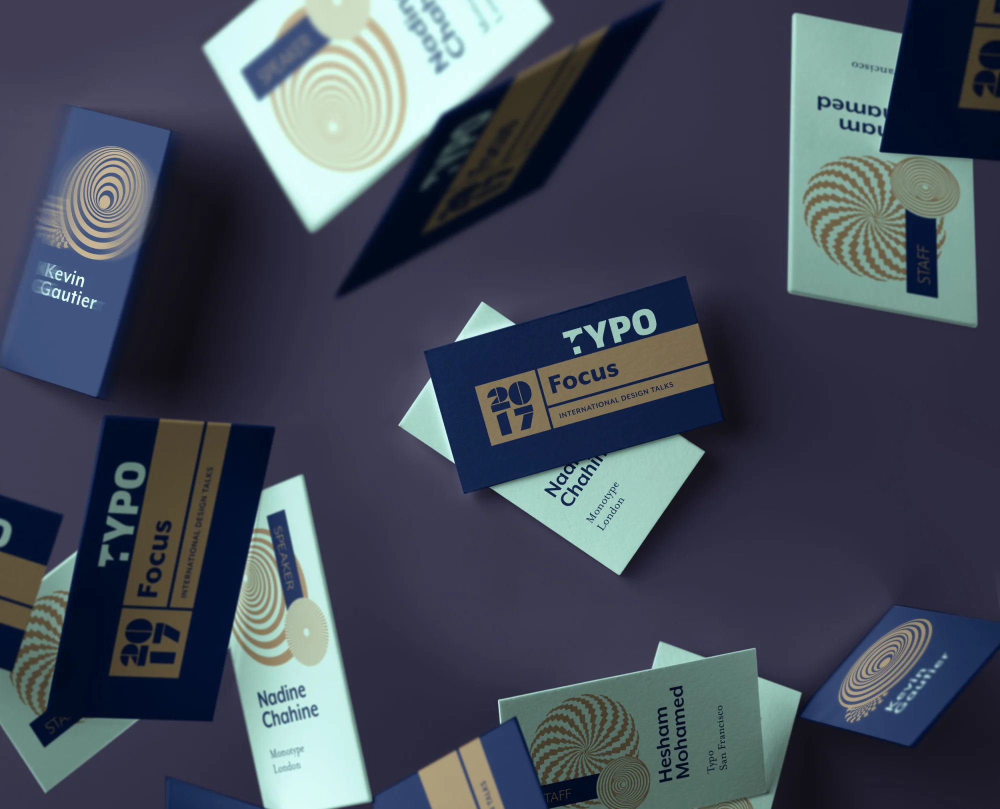
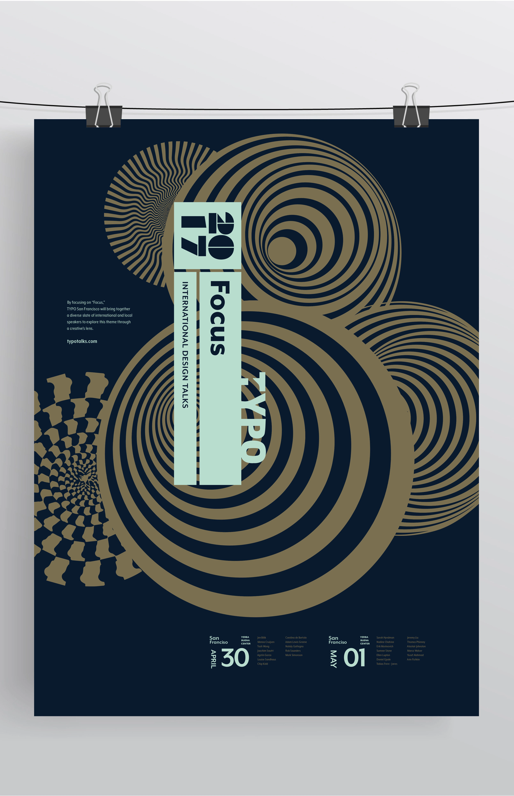
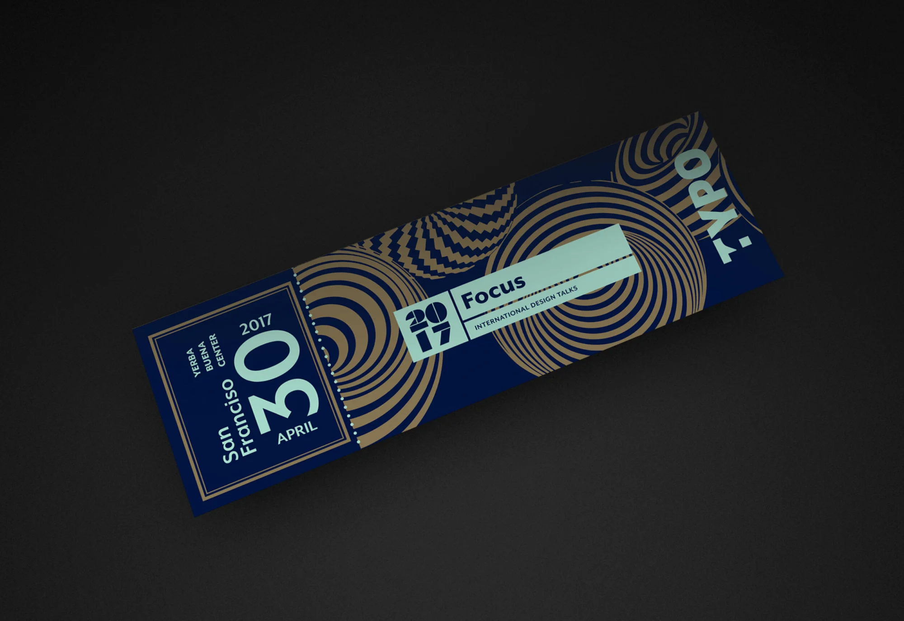
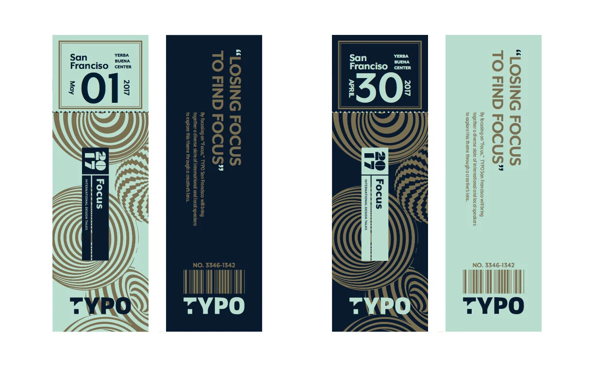
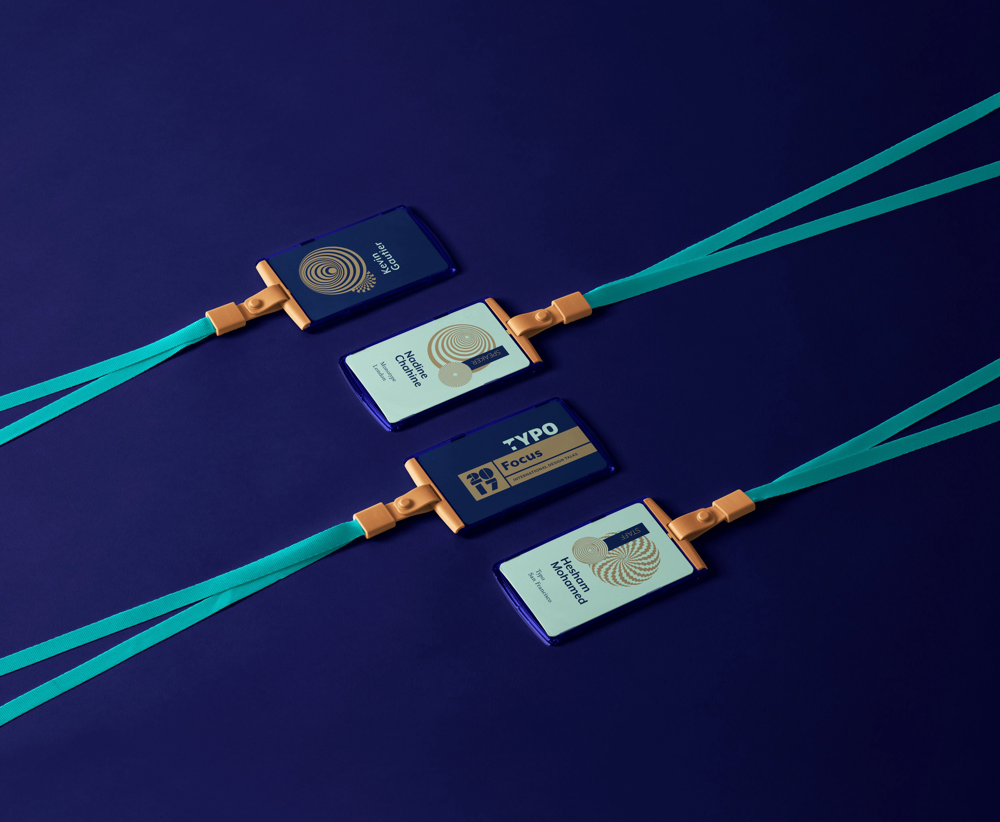
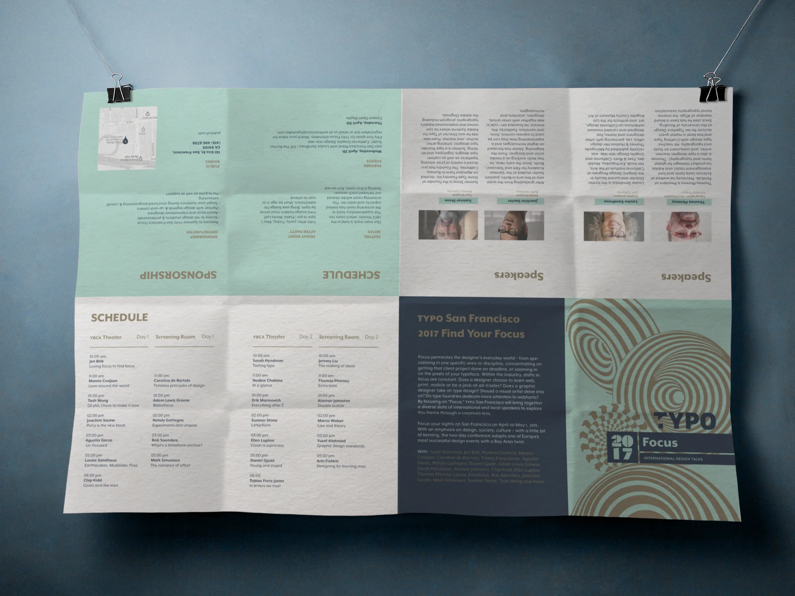
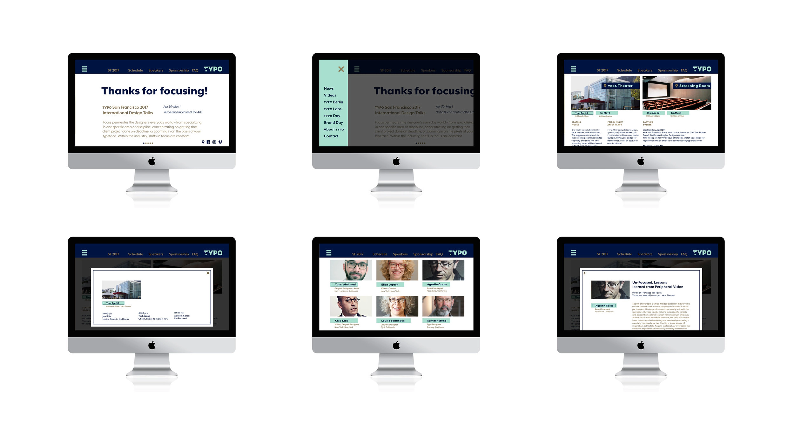
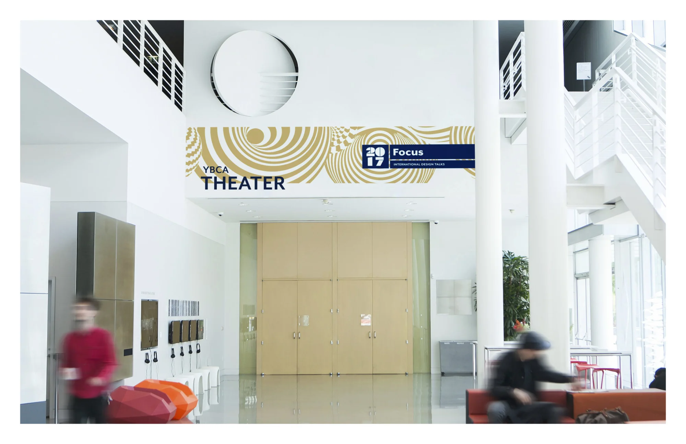
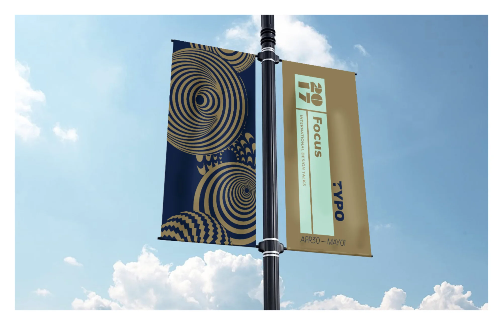
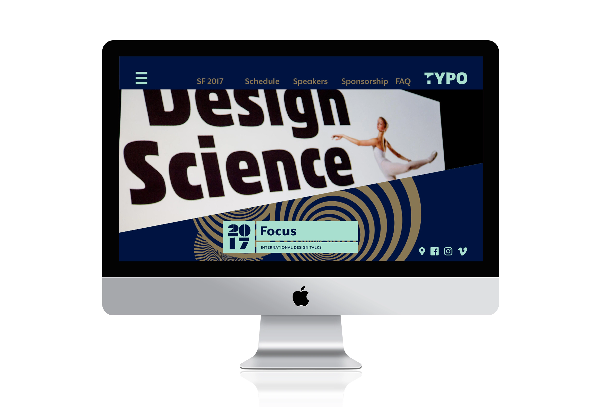
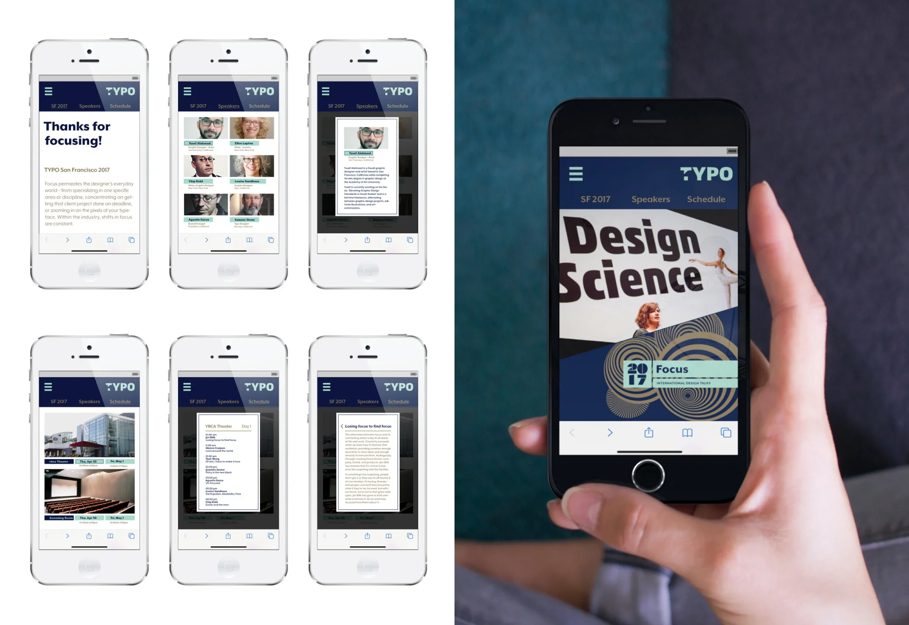
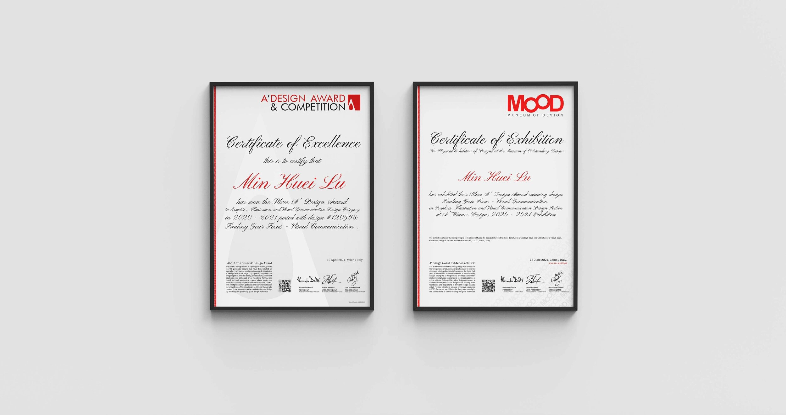
Recognition
Silver A’ Design Award。
本作品獲 A’ Design Award 平面、插畫與視覺傳達設計類銀獎，並於 2021 年 6 月 1–18 日在義大利科莫的 Museo del Design 展出。
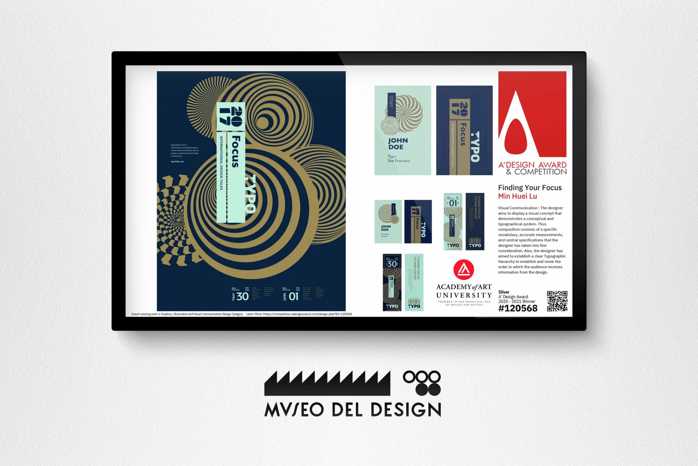